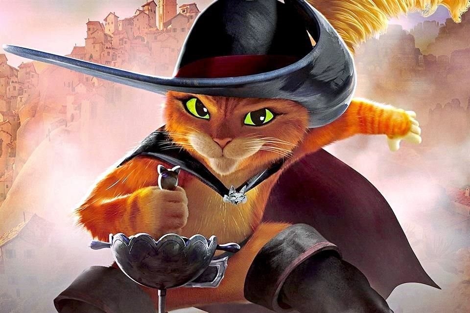

El gato con botas
Una loca aventura
¡Bienvenidos al fascinante mundo del Gato con Botas! Soy Leonardo Sánchez,con 19 años, estoy encantado de presentarles mi proyecto de programación como parte de la Comisión 3 de mi primer año en la facultad. En esta página web,una mezcla de mi fascinación por la programación con la magia del personaje del Gato con Botas. La idea principal es sumergirse en un espacio interactivo donde la diversión se entrelaza con el aprendizaje. Encontrarás un juego integrado que realize en un trabajo anterior,integrado como manera de interaccion El objetivo de este proyecto va más allá de la simple recreación. He diseñado esta plataforma para explorar las posibilidades de la programación web y brindar una experiencia envolvente para los usuarios de todas las edades. ¡Únete a la aventura del Gato con Botas y descubre un mundo lleno de desafíos y entretenimiento!
Como hice las imagenes?
El poder de la inteligencia artificial
Anteriormente, cuando arranque el trabajo no me gustaba la manera en la que las imagenes se veian,ya que no coordinaba el diseño,asi que una compañera me recomendo la IA,que crea imagenes asi que se las dejo para utilizar ya que a mi me sirvio bastante y me facilito las cosas! una muy buena herramienta
Mapa de la aventura
Un gran cambio
Al cambiar las imágenes, opté por además mejorar el mapa y dar una mejor versatilidad a la historia, así que dejaré una imagen del mapa nuevo como forma de guía a continuacion, el mismo fue creado con figJam, una herramienta que tambien me sirvio bastante para realizar bocetos de mi mapa, otra gran herramienta!

Lo que era antes
Un fuerte proceso
Como podemos ver,anteriormente utilize imagenes sacadas de cuentos o de peliculas (cosa que no quedaba muy bien),los botones eran redondos y poco esteticos, y los textos eran muy simples, pero ahora tuvo un gran cambio!a continuacion voy a dejar un link para que visualisen lo que era antes de pasarlo a p5js!
Y bueno llegamos al final, esto fue un poco de mi proceso al crear la aventura integrando el juego al que le dedique mucho tiempo y amor muchas gracias por ver <3
leoeoee1@gmail.com